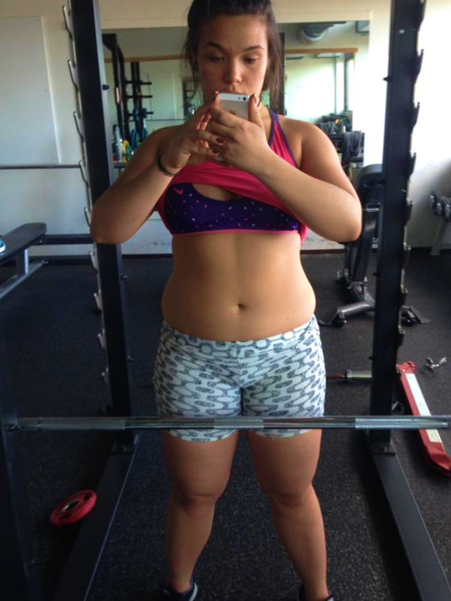
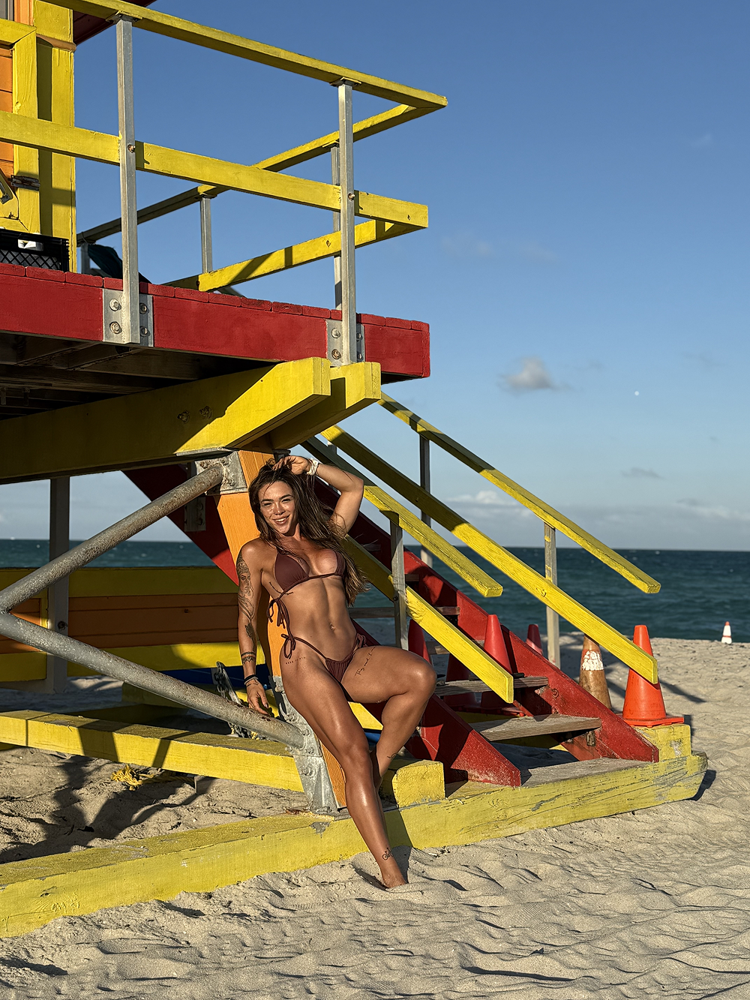
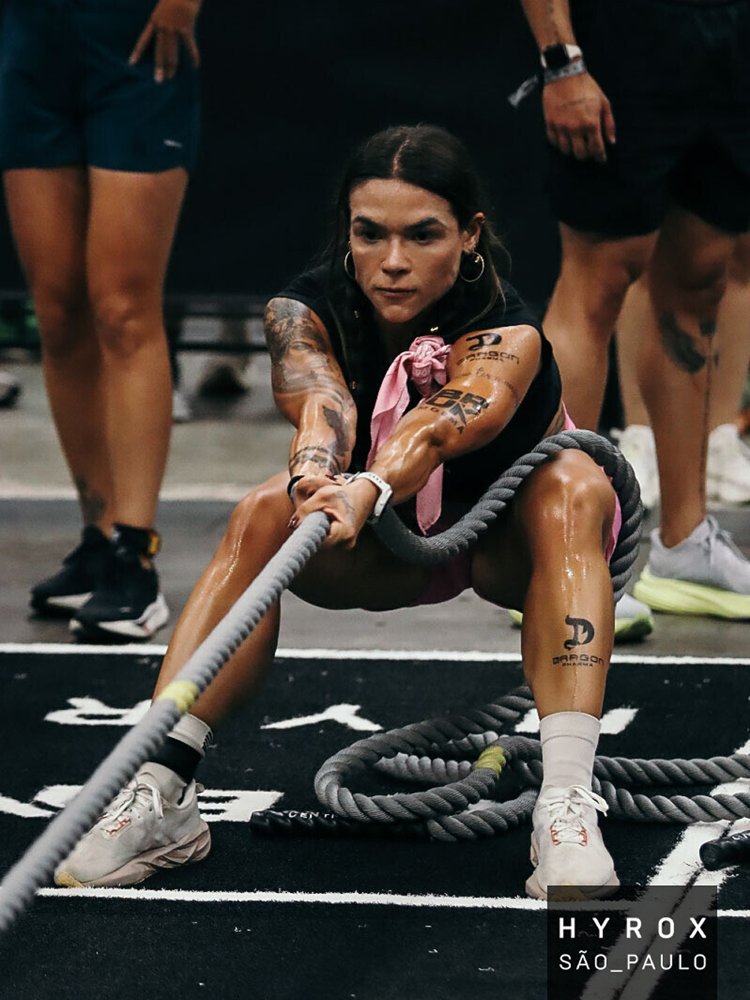
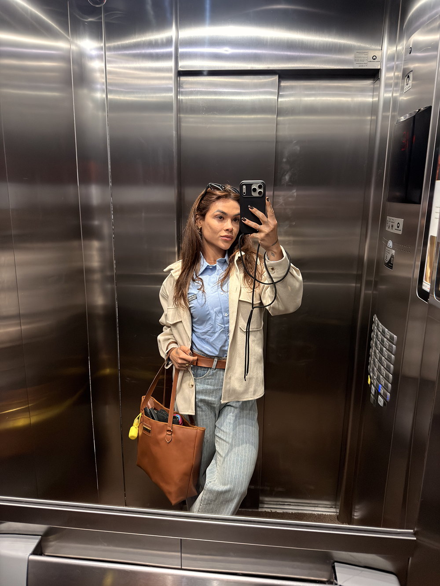
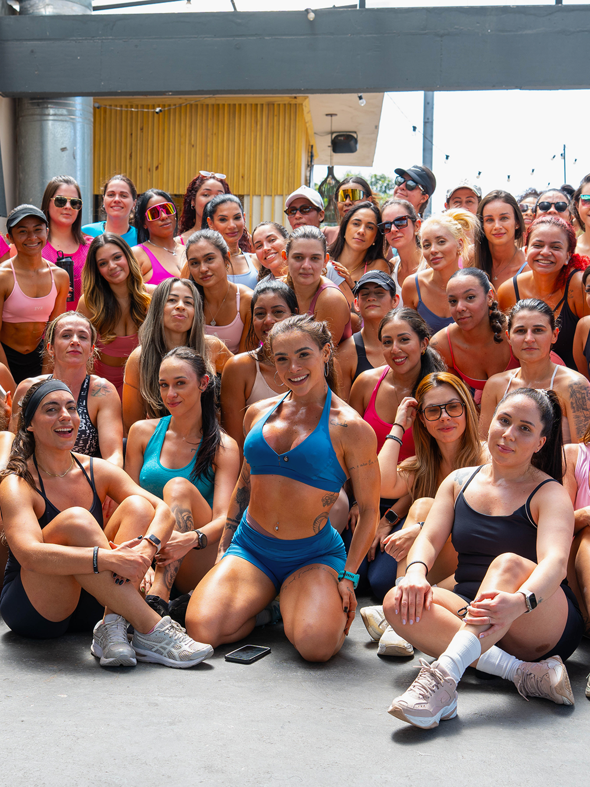
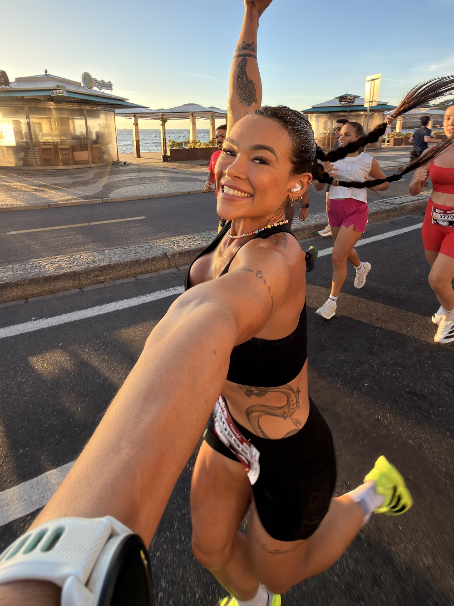
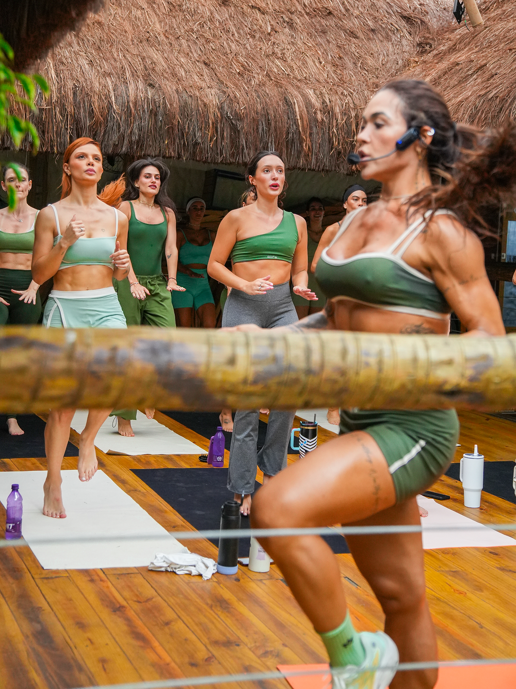
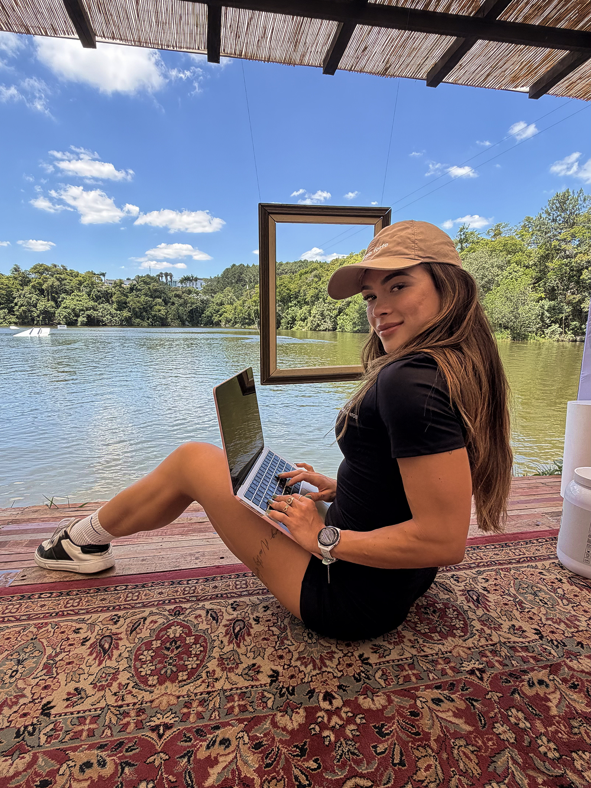
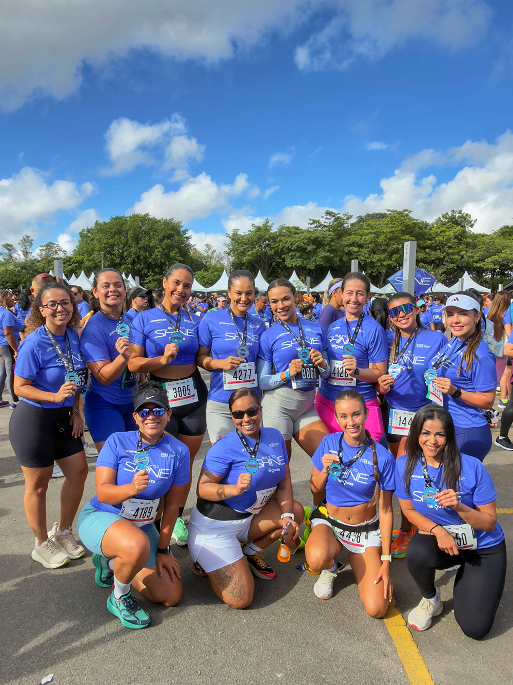
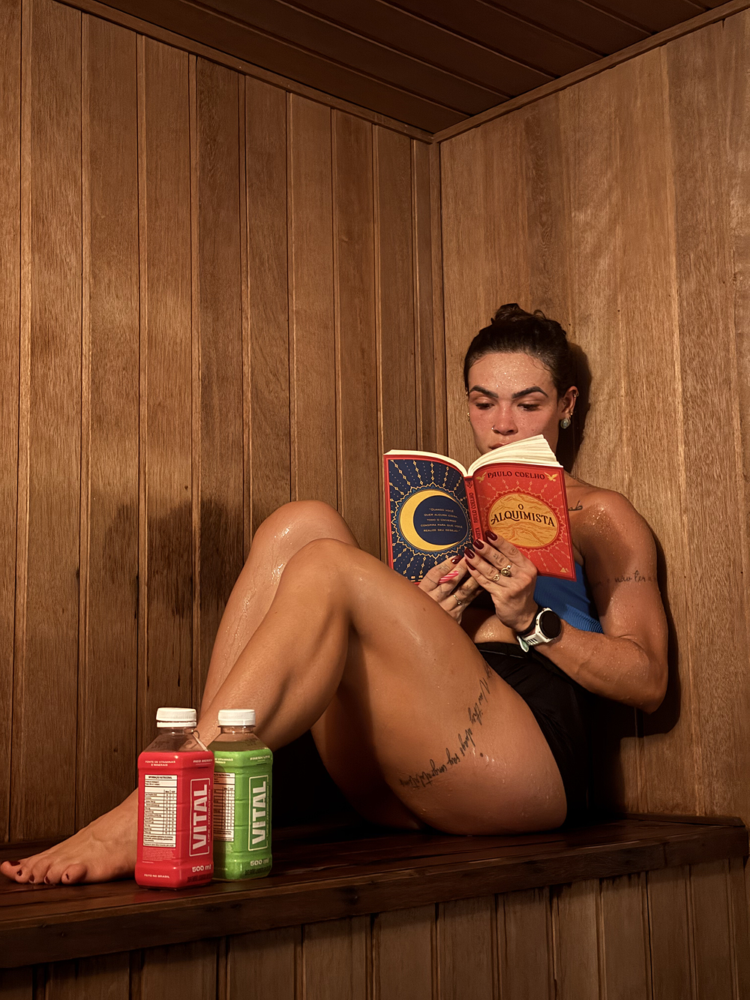

a goin club é a comunidade de mulheres que decidem cuidar do corpo, da mente e do dinheiro ao mesmo tempo, sem culpa e sem fórmula mágica.
você olha no espelho e não reconhece a mulher que queria ter se tornado. o corpo mudou, a autoestima foi junto.
trabalha muito, mas no final do mês o saldo não reflete o seu esforço. falar de dinheiro ainda parece tabu.
começa e para. começa e para. uma dieta, uma academia, um curso. a consistência parece ser para outras pessoas.
sente que não tem espaço para falar das suas ambições sem ser julgada ou minimizada. os homens nunca passam por isso.

antes
hoje
Por muitos anos, Luana Mendes acreditou que o problema era o próprio corpo.
cresceu no Rio de Janeiro acima do peso, sem dinheiro sobrando em casa e vivendo a rotina de quem precisava correr atrás desde cedo. acordava às 5 da manhã, pegava ônibus, estudava Educação Física e Sociologia e ainda dava aula em uma das maiores academias do Rio, a famosa DNA!
quando começou a mostrar essa rotina no Instagram, não imaginava que tanta gente se identificaria. o que ela compartilhava não era um corpo perfeito. era uma vida real.
os treinos explodiram no YouTube. os desafios online lotaram e reuniram milhares de mulheres e aos 23 anos ela bateu seu primeiro milhão de reais.
mas aquilo ainda não era o suficiente. ela deixou o Rio, se mudou para São Paulo, saiu da casa dos pais, pediu demissão e decidiu construir algo muito maior do que uma carreira como musa fitness.
no caminho, perdeu 15 kg, virou meia-maratonista, competiu no HYROX e subiu ao pódio. só que a maior transformação não aconteceu no físico. ela percebeu que existia um padrão.
enquanto ela evoluía, milhares de mulheres continuavam presas ao mesmo ciclo: tentando mudar o corpo, sem confiança, sem liberdade financeira e sempre colocando os próprios sonhos em último lugar. foi aí que ela entendeu que transformar apenas o corpo nunca seria suficiente.
era preciso transformar a vida inteira.
e foi assim que nasceu a goin club.



a goin club é uma comunidade de mulheres gostosas e inteligentes em movimento. aqui você tem espaço para falar de corpo, dinheiro, frustração e conquista, sem filtro e sem julgamento.
um grupo vivo, acolhedor e sem papo superficial. um lugar onde você pode ser honesta sobre onde está e onde quer chegar.
encontros ao vivo toda quarta-feira sobre desenvolvimento pessoal, negócios, finanças e saúde. tudo fica gravado na plataforma.
academia, casa ou corrida, você escolhe. planilhas de treino com suporte para dúvidas incluído.
livros e podcasts selecionados a dedo pela Luana para você consumir o que realmente vale o seu tempo.
um encontro presencial por mês. porque crescimento de verdade acontece quando você olha nos olhos de quem está no mesmo caminho.
aqui as mulheres falam de finanças, investimento e negócios com a mesma naturalidade que os homens aprenderam desde sempre.
dúvidas sobre treino, rotina, hábitos ou negócios? a comunidade e a Luana estão aqui para te dar suporte real.
em breve: nutricionista, psicóloga e profissionais de saúde dentro da goin. porque cuidar de você não tem um limite.
toda quarta-feira, um tema diferente. da mentalidade financeira ao treino de corrida, passando por negócios, liderança e tudo que as mulheres precisam aprender, mas que ninguém fala.
investimento, independência financeira, como mulheres podem falar de grana sem ser julgadas.
comportamento humano, hábitos, produtividade e como sair do ciclo de recomeçar sempre.
empreendedorismo, posicionamento, como transformar habilidades em renda real.
bate-papo aberto, dúvidas, histórias e acolhimento. o espaço mais gostoso do mês.






Suas talks são simplesmente incrível! Parabéns pela apresentação. Você tem o dom de abrir a mente e tocar o coração das pessoas ao mesmo tempo. Sua forma de se comunicar é leve, verdadeira e extremamente inspiradora. Você não apenas transmite uma mensagem, você faz com que a gente se enxergue nela.
Eu tô uma fase completamente perdida, sem foco, querendo conquistar o mundo e conquistando nada. Querendo mudar de emprego, de área, e com medo de dar os primeiros passos. Cada semana eu sinto que um sementinha do bem é plantada. Tenho nem palavras para agradecer por cada palavra dita.
Você é tão autêntica que acredito que muitas mulheres se sentem representadas, acolhidas e motivadas por você. Obrigada por compartilhar sua essência e por inspirar tantas de nós a acreditarmos mais em quem somos e no que podemos nos tornar.
Pra mim é muito difícil estar nesse mundo e “em outros”, sinto que principalmente aonde moro, por ser litoral e pequeno as mulheres em geral não tem ambição nos negócios, as que empreendem eu não tenho esse acesso, enfim.. e por eu ser comunicadora quero ganhar mais dinheiro na minha área mas preciso aprender a ganhar dinheiro saca? Por isso tô aqui, pra aprender um pouco com cada , sei que a visão de mundo e de negócios de vcs e da Luana vão me ajudar!
Lu, você é INSPIRAÇÃO para muitas mulheres, e Eu sou uma delas. Seu jeito de ser, sua verdade, suas dicas, é motivador de mais para mim e creio que muitas. E fiquei feliz demais em participar desde talk, mesmo que rápido e não dando tempo de eu falar na hora, mas só em estar um pouco mais próximo de você e ter esse contato, é gratificante. Estou muito feliz com esse seu projeto e de poder participar junto com você e de outras mulheres maravilhosas..
Lu, comecei a te seguir por causa da DNA mas de todas que seguia de lá você foi a única que continuei seguindo exatamente por ser você e por ir além de só corpo. O motivo de ter entrado no grupo foi exatamente esse que muitas de vocês falaram aqui: não consigo ter trocas boas com outras mulheres. Na roda de amigos tenho +3 amigos homens que sou mais próxima deles do que das esposas mas pq eles falam de negócios e elas só de fofocas. Enfim, te acho muito difernte e adoro isso, você me inspira demais!
a goin club abre uma vez por mês e fica disponível por apenas uma semana. não deixe para o próximo mês — você já sabe que o "mês que vem" nunca chega.
anual
R$49,92
por mês · 12x no cartão
economia de R$238/ano vs mensal
quero o anualpagamento via cartão de crédito, pix ou boleto · compra 100% segura
a goin club abre novas vagas apenas uma vez por mês.
quando as inscrições encerram, você precisa esperar a próxima turma.
sem lista de espera, sem exceção.
se você chegou até aqui, talvez este seja o momento que estava esperando para começar.
daqui a um mês, você pode olhar para trás e perceber que finalmente deu o primeiro passo.
ou perceber que adiou mais uma vez.
a escolha acontece hoje.
entra, explora a comunidade, participa das talks, acessa os treinos. se em 7 dias você não sentir que a goin club é o lugar certo pra você, basta entrar em contato e devolvemos 100% do seu dinheiro. sem perguntas, sem burocracia. simples assim.
o momento certo é o que você decide que é. e você chegou até aqui porque uma parte de você já sabe que é agora.
quero entrar para a goin clubgarantia de 7 dias · acesso imediato · cancele quando quiser